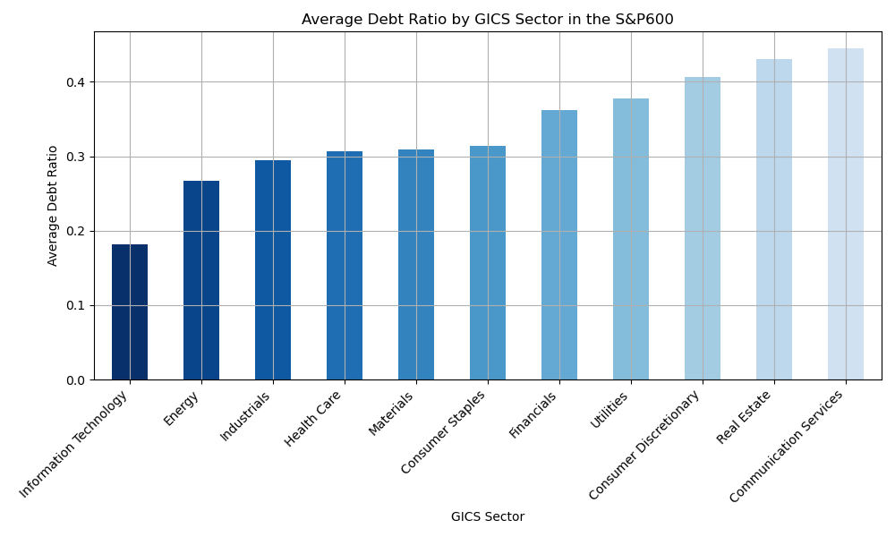
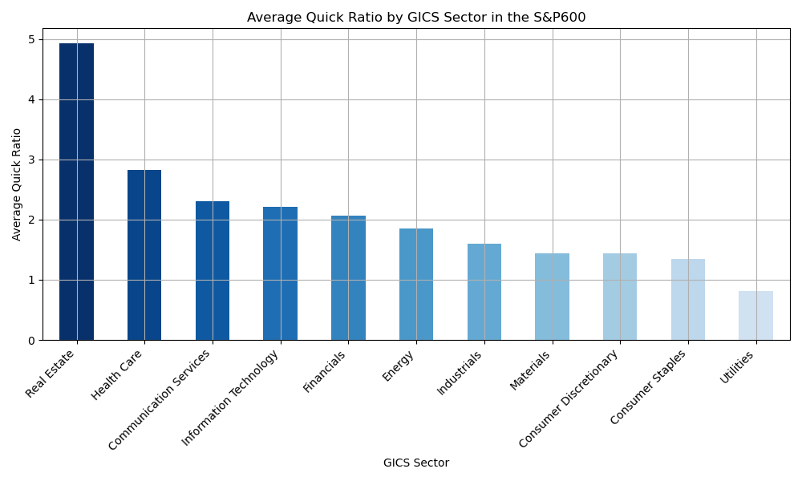

S&P600 Sector Strength Comparison
Crafted with Python's versatility, this web application offers analyses of the S&P 600's financial landscape. Using HTML-scraping, it extracts pertinent data from Wikipedia to compile a comprehensive list of S&P 600 constituents. With data from the Yahoo Finance library, it seamlessly integrates balance sheets and income statements into a structured pandas DataFrame for efficient manipulation. The application's analytical capabilities, powered by pandas and Matplotlib, reveal hidden patterns and trends within the S&P 600. This sector-specific approach enables users to uncover financial insights that might otherwise remain hidden. The dynamic visualizations generated by Matplotlib provide an intuitive interface for exploring financial metrics, empowering users to make informed investment decisions.

This visualization dissects the leverage profiles of the S&P 500 across GICS sectors, revealing a stark disparity: technology companies exhibit a distinctly lower Debt Ratio (Total Debt to Total Assets Ratio) compared to their counterparts in Industrials and Finance.
This observation resonates with established financial theory, positing that growth-oriented firms, often prevalent in the technology sector, tend to favor equity financing over debt due to its flexibility and lack of fixed interest repayments. This strategy prioritizes long-term growth potential over immediate profitability, potentially explaining the lower debt levels observed.
Interestingly, this aligns with the historical performance divergence between major indices. The tech-heavy Nasdaq 100, known for its growth orientation, has significantly outpaced the more industrially-focused Dow Jones Industrial Average over the past decade, further supporting the link between lower debt and growth potential.
By highlighting this nuanced relationship between sector, leverage, and performance, this visualization offers valuable insights for investors seeking to understand the underlying dynamics shaping market behavior.
This graph shows the average liquidity ratio for each sector in the S&P 600. The liquidity ratio is a measure of a company's ability to meet its short-term obligations, such as its debts and accounts payable. It is calculated by dividing current assets by current liabilities. There are a number of factors that can affect a company's liquidity ratio, including its industry, its business model, and its financial health. For example, companies in industries that are cyclical, such as energy, tend to have lower liquidity ratios than companies in industries that are more stable, such as consumer staples. Companies that have a lot of debt may also have lower liquidity ratios than companies that are less leveraged.
Delving into the financial intricacies of the S&P 600, this visualization unveils a counterintuitive truth: the Real Estate sector boasts a higher average profit margin compared to the often-lauded Tech sector. This phenomenon can be partially attributed to the divergent accounting methods employed by each industry, with Real Estate leveraging depreciation strategies that can effectively lower taxable income.
Furthermore, it's worth noting that the S&P 600, unlike its larger counterpart the S&P 500, comprises a significant portion of young, high-growth companies within the Tech sector. These firms often prioritize market share and user acquisition over immediate profitability, contributing to the observed margin differential.
This nuanced perspective underscores the importance of sector-specific analysis when evaluating profit margins. While headline figures might suggest underperformance in Tech, a deeper understanding of industry dynamics reveals a more complex narrative.
This chart spotlights the asset turnover champions of the S&P 600, revealing how efficiently companies extract revenue from their assets. Consumer Staples leads the pack, suggesting they excel at generating sales without bogging themselves down with excessive assets. In stark contrast, Utilities bring up the rear, likely due to the capital-intensive nature of their infrastructure. But is this sluggishness a sign of weakness, or simply a different strategic approach?

This graph shows the average quick ratio for each sector in the S&P 600. The quick ratio is a measure of a company's ability to meet its short-term obligations, such as its debts and accounts payable, using its most liquid assets. It is calculated by dividing a company's current assets minus its inventory by its current liabilities.
As you can see from the graph, the average quick ratio varies from sector to sector. The consumer staples sector has the highest average quick ratio, at 1.6, while the energy sector has the lowest, at 0.6. This means that, on average, companies in the consumer staples sector are better able to meet their short-term obligations using their most liquid assets than companies in the energy sector.
There are a number of factors that can affect a company's quick ratio, including its industry, its business model, and its financial health. For example, companies in industries that tend to hold a lot of inventory, such as retail, may have lower quick ratios than companies in industries that hold less inventory, such as technology. Companies that have a lot of debt may also have lower quick ratios than companies that are less leveraged.
The quick ratio is a useful tool for investors to assess a company's short-term liquidity. However, it is important to note that the quick ratio is just one measure of a company's financial health. Other factors, such as the company's profitability and its debt-to-equity ratio, should also be considered when evaluating a company's financial strength.
Drawing Conclusions
In the subsequent analysis, our aim is to derive actionable insights from the dataset at hand. By leveraging the meticulously calculated financial ratios, we endeavor to assess the overall health of a company. Employing a composite ratio methodology, wherein advantageous ratios occupy the numerator while disadvantageous ones find place in the denominator, we can formulate a novel metric for gauging companies' financial robustness. Through this discerning approach, we seek to identify and rank companies based on their fiscal well-being. As a result of this comprehensive study, we aim to pinpoint ten stocks deserving of a deeper examination and potential investment consideration.
The selection of the aforementioned 10 stocks underscores their status as prime exemplars of financial robustness within the index, as delineated by the meticulous evaluation conducted in this comprehensive study. Such discernment holds profound significance across various strata of the investment landscape, catering not only to the discerning purview of hedge funds but also to the strategic considerations of individual investors, pension funds, and the scholarly pursuits of academics. This curated portfolio of stocks not only embodies resilience but also serves as a compass for informed decision-making, offering invaluable insights into prudent investment strategies and portfolio diversification approaches.